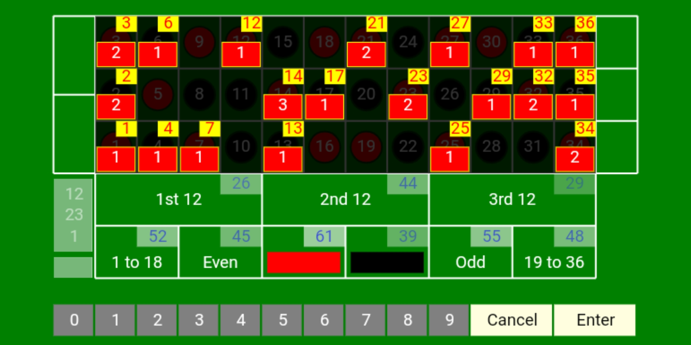
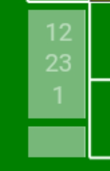

Welcome
Start using the Roulette Predictor in 3 easy steps.

Step 1
Using the number pad and the Enter button, please select the last 3 rolls.
Step 2
The selected numbers appear in the roll stack and as you enter the 3rd roll,
the probabilities appear on the board.

Step 3
Based on the algorithm, you will see the number of times a particular roll appeared after the enetered combination of last 3 rolls.